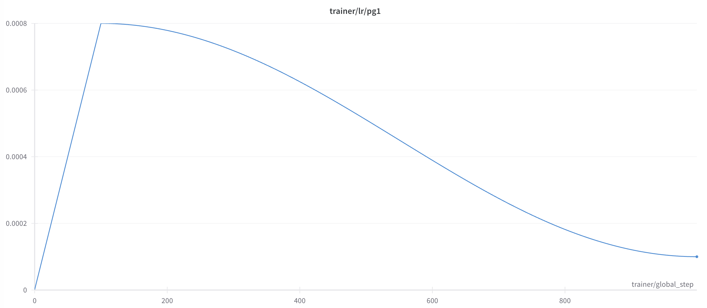

Introduction
This blog post explores the implementation of a Genomics Foundation Model using PyTorch Lightning. The aim is to create a clean, adaptable foundation for research, combining enough manual customization to enable easy modifications while leveraging tools for optimized training and monitoring.
State Space Models (SSMs) have recently generated considerable interest due to their efficiency and superior capability in managing long-range dependencies. Since the release of the Mamba architecture, research groups across various domains have adopted it as a drop-in replacement for transformer blocks in many architectures. While language tasks remain the primary focus for performance comparisons, Mamba has also found applications in other fields.
DNA modeling, known for its complexity and demand for long-context understanding, has particularly benefited from these innovations. Recently, Caduceus, a bi-directional Mamba-based encoder, was open-sourced, introducing a novel class of DNA Foundation Models that sets a new benchmark for genomic analysis. Let's train a Caduceus model and see how it performs :)
Model Architecture
Caduceus is a state-of-the-art architecture designed to address key challenges in genomic sequence modeling, specifically the need for long-range interaction modeling and reverse complementarity (RC) in DNA sequences. Built upon the Mamba block, Caduceus introduces two extensions: the BiMamba component for bi-directionality and the MambaDNA block for RC equivariance. These innovations enable Caduceus to model both forward and reverse sequences efficiently while maintaining parameter efficiency. This architecture supports the first family of RC-equivariant bi-directional DNA models, outperforming larger models that lack bi-directionality and equivariance on long-range genomic tasks .
For the purpose of this blog I will train Caduceus models of 50M parameters, and see that we can already match some great results on genomics standard benchmarks. One thing we can also do is to integrate Mamba2 into the initial caduceus model and check on potential improvements.
My models are composed of:
- A vocab size of 16
- Embedding size of 768 (that gets multiplied by two because Caduceus adds RC-equivariance)
- 12 layers
- a d_state of 64 for Mamba2 blocks (the dimension of the hidden layer)
Dataset
Before we dive into the training process, let’s take a moment to introduce the dataset we'll be using. With the rapid advancements in DNA modeling this year, DNA datasets have also grown significantly. Some of the most popular datasets for DNA modeling include HG38, 1000 Genomes (1000G), and multispecies datasets, which have been instrumental in training state-of-the-art models like the Nucleotide Transformer. For this blog, I’ll be using the HG38 dataset, widely recognized as the 'reference' human genome, consisting of approximately 3.2 billion nucleotides.
Good thing, the HG38 dataset is open-source and easy to download using this command.
mkdir -p data/hg38/
curl https://storage.googleapis.com/basenji_barnyard2/hg38.ml.fa.gz > data/hg38/hg38.ml.fa.gz
gunzip data/hg38/hg38.ml.fa.gz # unzip the fasta file
curl https://storage.googleapis.com/basenji_barnyard2/sequences_human.bed > data/hg38/human-sequences.bedThere is ~24 chromosomes in the whole genome (merged into 1 fasta file), each chromosome is a continuous sequence, basically. Then the .bed file composes the sequences intervals (contains chromosome name, start, end, split, which then allow you to retrieve from the fasta file). The key component of the dataset implementation is the Fasta Interval class that allows you to wrap your dataset in the right format for our DNA model.
View FastaInterval code snippet
class FastaInterval:
"""Retrieves sequences from a fasta file given a chromosome and start/end indices."""
def __init__(
self,
*,
fasta_file,
return_seq_indices=False,
rc_aug=False,
local=False
):
fasta_file = Path("./data/hg38/hg38.ml.fa")
assert fasta_file.exists(), "Path to fasta file must exist!"
self.seqs = Fasta(str(fasta_file))
self.return_seq_indices = return_seq_indices
self.rc_aug = rc_aug
# calc len of each chromosome in fasta file, store in dict
self.chr_lens = {}
for chr_name in self.seqs.keys():
self.chr_lens[chr_name] = len(self.seqs[chr_name])
@staticmethod
def _compute_interval(start, end, max_length, i_shift):
if max_length == MAX_ALLOWED_LENGTH:
return start, end
if max_length < MAX_ALLOWED_LENGTH:
#assert MAX_ALLOWED_LENGTH % max_length == 0
return start + i_shift * max_length, start + (i_shift + 1) * max_length
else:
raise ValueError(f"`max_length` {max_length} (> 2^{int(math.log(MAX_ALLOWED_LENGTH, 2))}) is too large!")
def __call__(
self,
chr_name,
start,
end,
max_length,
i_shift,
return_augs=False,
):
"""
max_length passed from dataset, not from init
"""
chromosome = self.seqs[chr_name]
chromosome_length = self.chr_lens[chr_name]
start, end = self._compute_interval(start, end, max_length, i_shift)
if end > chromosome_length:
# Shift interval down
start = start - (end - chromosome_length)
end = chromosome_length
assert start == chromosome_length - max_length
if start < 0:
# Shift interval up
end = end - start
start = 0
assert end == max_length
if end > chromosome_length:
# This may occur if start + MAX_ALLOWED_LENGTH extends beyond the end of the chromosome
start = chromosome_length - max_length
end = chromosome_length
seq = str(chromosome[start:end])
if self.rc_aug and coin_flip():
seq = string_reverse_complement(seq)
return seqNow, we can wrap all of this into a Dataset class and a Lightning Data Module to start trainings.
View Data Modules key snippet
def __getitem__(self, idx):
"""Returns a sequence of specified len"""
# sample a random row from df
row_idx, shift_idx = idx // self.shifts, idx % self.shifts
row = self.df.iloc[row_idx]
chr_name, start, end = (row.iloc[0], row.iloc[1], row.iloc[2])
seq = self.fasta(
chr_name,
start,
end,
max_length=self.max_length,
i_shift=shift_idx,
return_augs=self.return_augs,
)
if end - start != MAX_ALLOWED_LENGTH:
print(row, "\nLength: ", end - start)
if self.tokenizer_name == "char":
seq = self.tokenizer(
seq,
padding="max_length",
max_length=self.pad_max_length,
truncation=True,
add_special_tokens=False
)
seq = seq["input_ids"] # get input_ids
# need to handle eos here
if self.add_eos:
# append list seems to be faster than append tensor
seq.append(self.tokenizer.sep_token_id)
elif self.tokenizer_name == "bpe":
seq = self.tokenizer(
seq,
# add_special_tokens=False,
padding="max_length",
max_length=self.pad_max_length,
truncation=True,
)
# get input_ids
if self.add_eos:
seq = seq["input_ids"][1:] # remove the bos, keep the eos token
else:
seq = seq["input_ids"][1:-1] # remove both special tokens
# convert to tensor
seq = torch.LongTensor(seq)
# replace N token with a pad token, so we can ignore it in the loss
seq = self.replace_value(seq, self.tokenizer._vocab_str_to_int["N"], self.tokenizer.pad_token_id)
if self.mlm:
data, target = mlm_getitem(
seq,
mlm_probability=self.mlm_probability,
contains_eos=self.add_eos,
tokenizer=self.tokenizer,
eligible_replacements=self.eligible_replacements,
)
else:
data = seq[:-1].clone()
target = seq[1:].clone()
return data, targetPretraining
Training was done using a variety of optimization techniques that are very common in the Language Model pretraining landscape, and easy to implement with Lightning:
- Scheduled Learning Rate: Warmup for 10% of the training steps until reaching a 8e-4 peak and then cosine annealing until the end of training.

- Mixed Precision Training: for computational efficiency and memory usage.
- Gradient Clipping: Set to 1.0 to avoid gradient exploding.
- Gradient Accumulation: To allow a large batch size with the hardware at hand. After experimentation, I found that a global batch size of 1.5M tokens was a great value that trades-off speed and training stability.
- Weight Decay: Set to 0.2.
- Gradient Checkpointing: To avoids redundant gradient recomputation and save some memory space.
- DDP (Distributed Data Parallel): Facilitates parallel data processing on multiple GPUs, accelerating training times significantly.
Results
Given that Caduceus is a bidirectionnal encoder model, we can train it following a BERT-style: with Masked Language Modeling
As a test for the small tweaks I added to the initial caduceus code, I trained two equally sized and parametrized models. One with Mamba1 blocks and the other with Mamba2 blocks. I trained my models on around 10B tokens each, and we can check the validation losses for both.
It looks good! Both models seem to have converged to a plateau, and the Mamba2 version seems to be slightly better than the initial Mamba1 version!
Benchmarking the models
Incoming
How to Use This Implementation
You can find detailed instructions on the GitHub repository. It includes setup, configuration, and usage instructions.